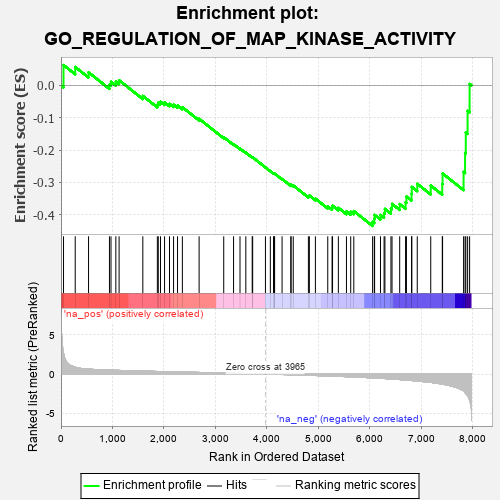
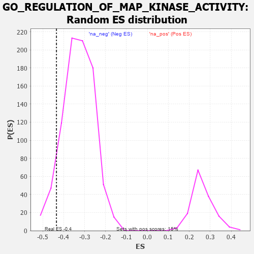

| | | Dataset | 7d |
| Phenotype | NoPhenotypeAvailable |
| Upregulated in class | na_neg |
| GeneSet | GO_REGULATION_OF_MAP_KINASE_ACTIVITY |
| Enrichment Score (ES) | -0.43438172 |
| Normalized Enrichment Score (NES) | -1.3174216 |
| Nominal p-value | 0.078638494 |
| FDR q-value | 0.45336676 |
| FWER p-Value | 1.0 |
Table: GSEA Results Summary

Fig 1: Enrichment plot: GO_REGULATION_OF_MAP_KINASE_ACTIVITY
Profile of the Running ES Score & Positions of GeneSet Members on the Rank Ordered List
| PROBE | GENE SYMBOL | GENE_TITLE | RANK IN GENE LIST | RANK METRIC SCORE | RUNNING ES | CORE ENRICHMENT | | 1 | TGFB3 | | | 49 | 2.654 | 0.0629 | No |
| 2 | HGF | | | 276 | 0.870 | 0.0570 | No |
| 3 | PKN1 | | | 535 | 0.619 | 0.0405 | No |
| 4 | PDCD4 | | | 941 | 0.497 | 0.0022 | No |
| 5 | DVL3 | | | 971 | 0.490 | 0.0113 | No |
| 6 | FZD10 | | | 1065 | 0.470 | 0.0118 | No |
| 7 | SRC | | | 1128 | 0.459 | 0.0159 | No |
| 8 | ERP29 | | | 1589 | 0.376 | -0.0325 | No |
| 9 | NUP62 | | | 1871 | 0.324 | -0.0596 | No |
| 10 | PAK3 | | | 1889 | 0.322 | -0.0533 | No |
| 11 | HACD3 | | | 1932 | 0.315 | -0.0504 | No |
| 12 | RAF1 | | | 2011 | 0.303 | -0.0524 | No |
| 13 | BMP7 | | | 2107 | 0.290 | -0.0569 | No |
| 14 | SYK | | | 2186 | 0.278 | -0.0595 | No |
| 15 | SHC2 | | | 2263 | 0.266 | -0.0622 | No |
| 16 | MIF | | | 2357 | 0.252 | -0.0674 | No |
| 17 | SASH1 | | | 2682 | 0.201 | -0.1031 | No |
| 18 | ERN2 | | | 3160 | 0.129 | -0.1601 | No |
| 19 | TAB1 | | | 3351 | 0.097 | -0.1816 | No |
| 20 | HGS | | | 3476 | 0.080 | -0.1952 | No |
| 21 | MAPK3 | | | 3589 | 0.062 | -0.2077 | No |
| 22 | NF1 | | | 3713 | 0.040 | -0.2222 | No |
| 23 | DAXX | | | 3722 | 0.038 | -0.2222 | No |
| 24 | IGF1R | | | 3970 | -0.002 | -0.2534 | No |
| 25 | SFRP2 | | | 4065 | -0.018 | -0.2648 | No |
| 26 | PLCE1 | | | 4127 | -0.028 | -0.2718 | No |
| 27 | CRK | | | 4139 | -0.031 | -0.2724 | No |
| 28 | CDK12 | | | 4148 | -0.033 | -0.2726 | No |
| 29 | RGS3 | | | 4293 | -0.059 | -0.2892 | No |
| 30 | ERCC6 | | | 4464 | -0.087 | -0.3085 | No |
| 31 | LRRK2 | | | 4467 | -0.087 | -0.3064 | No |
| 32 | ILK | | | 4510 | -0.096 | -0.3093 | No |
| 33 | TNIK | | | 4804 | -0.158 | -0.3422 | No |
| 34 | TAOK3 | | | 4823 | -0.162 | -0.3402 | No |
| 35 | FZD4 | | | 4940 | -0.186 | -0.3501 | No |
| 36 | NEK10 | | | 5180 | -0.244 | -0.3739 | No |
| 37 | CDK1 | | | 5264 | -0.262 | -0.3776 | No |
| 38 | EPHA4 | | | 5273 | -0.265 | -0.3717 | No |
| 39 | FZD5 | | | 5386 | -0.292 | -0.3783 | No |
| 40 | FGFR1 | | | 5543 | -0.332 | -0.3894 | No |
| 41 | ROR2 | | | 5626 | -0.353 | -0.3905 | No |
| 42 | MADD | | | 5686 | -0.371 | -0.3884 | No |
| 43 | FZD8 | | | 6051 | -0.490 | -0.4216 | Yes |
| 44 | DBNL | | | 6084 | -0.501 | -0.4126 | Yes |
| 45 | UBB | | | 6090 | -0.503 | -0.4002 | Yes |
| 46 | INSR | | | 6204 | -0.538 | -0.4005 | Yes |
| 47 | STK39 | | | 6274 | -0.563 | -0.3945 | Yes |
| 48 | TRAF7 | | | 6290 | -0.571 | -0.3816 | Yes |
| 49 | UBE2N | | | 6407 | -0.621 | -0.3801 | Yes |
| 50 | CSK | | | 6428 | -0.630 | -0.3662 | Yes |
| 51 | ROBO1 | | | 6577 | -0.699 | -0.3667 | Yes |
| 52 | PAK1 | | | 6691 | -0.757 | -0.3613 | Yes |
| 53 | EGFR | | | 6708 | -0.765 | -0.3434 | Yes |
| 54 | ADAM9 | | | 6808 | -0.819 | -0.3346 | Yes |
| 55 | PAQR3 | | | 6812 | -0.819 | -0.3136 | Yes |
| 56 | CSPG4 | | | 6918 | -0.878 | -0.3040 | Yes |
| 57 | PTPRJ | | | 7180 | -1.054 | -0.3096 | Yes |
| 58 | GRM1 | | | 7404 | -1.272 | -0.3047 | Yes |
| 59 | UBC | | | 7410 | -1.274 | -0.2721 | Yes |
| 60 | TRAF6 | | | 7818 | -2.157 | -0.2674 | Yes |
| 61 | GRM4 | | | 7847 | -2.393 | -0.2086 | Yes |
| 62 | TRAF2 | | | 7861 | -2.481 | -0.1456 | Yes |
| 63 | CAV3 | | | 7896 | -2.739 | -0.0786 | Yes |
| 64 | ARRB1 | | | 7935 | -3.377 | 0.0046 | Yes |
Table: GSEA details [plain text format]

Fig 2: GO_REGULATION_OF_MAP_KINASE_ACTIVITY: Random ES distribution
Gene set null distribution of ES for GO_REGULATION_OF_MAP_KINASE_ACTIVITY